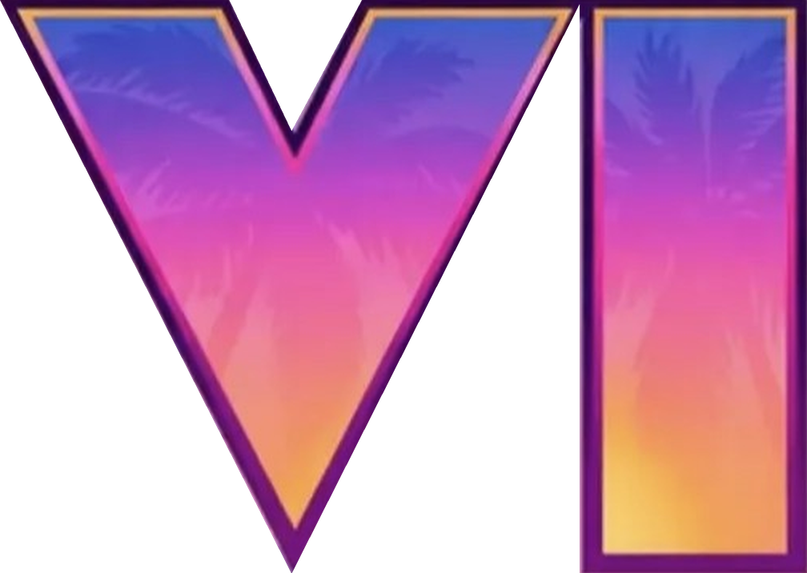

GTAVIO passo a passo completo: do gameplay cru ao clip monetizado, sem editar nada na mão.
No dia 19, milhões de pessoas vão procurar a mesma coisa ao mesmo tempo: segredos do mapa, easter eggs, momentos absurdos. A demanda já existe. Falta quem entregue o conteúdo, rápido e todo dia.
Não tente caçar o momento certo. Grave tudo. Quem encontra o momento é a IA.
Você sobe o vídeo longo. A IA encontra os picos de ação, corta, reenquadra em 9:16 e dá uma nota de potencial viral para cada trecho.
Legenda automática no CapCut. Voz com ElevenLabs. E os ganchos dos primeiros 3 segundos, escritos por IA.
"Escreva 10 ganchos de até 8 palavras para um clip de GTA 6 em que [descreva a cena]. Tom de curiosidade, sem exagero, em português do Brasil."
O mesmo corte vai para TikTok, Reels e Shorts. Volume e constância vencem o clip perfeito.
Leia a política de vídeos da Rockstar antes de monetizar. As regras são dela.
Comenta a palavra e eu te mando a lista completa das ferramentas.
GTASalva este post para usar no lançamento.